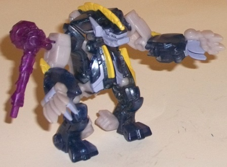 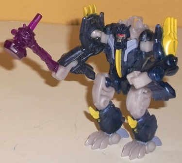
Size : Legion
Difficulty of Transformation : Very Easy
Color Scheme : Transparent dark blue, dull milky light gray, and some yellow, silver, light red, dull pale purplish blue, and transparent dark purple
Individual Rating : 9.0
Allegiances
: Predacon
Set Price
: $25 (U.S.)
Overall Rating
: 7.6
(NOTE: Because this set is composed of repaints,
this is not a full-blown review. This mainly covers any changes made to
the set and the color scheme, and merely compares it to the original versions
of these molds. For a review on the mass-release Beast Hunters Blight,
go
here
. For a review on the mass-release
Beast Hunters Hun-Gurrr and the Abominus gestalt, go
here
.
For a review on the mass-release Beast Hunters Rippersnapper, go
here
.
For a review on the mass-release Twinstrike, go
here
.
For a review on the mass-release Windrazor, go
here
.)
 Blight
Blight
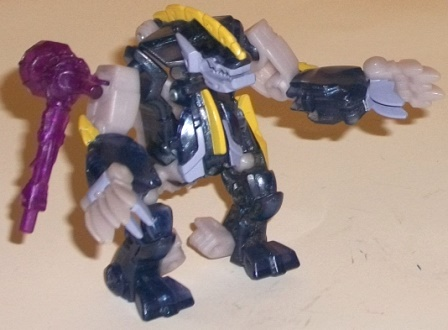
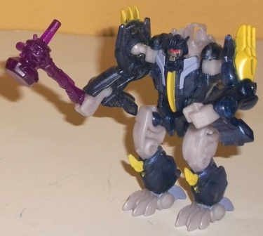
Size
: Legion
Difficulty of Transformation
: Very
Easy
Color Scheme
: Transparent dark blue,
dull milky light gray, and some yellow, silver, light red, dull pale purplish
blue, and transparent dark purple
Individual Rating
: 9.0
Blight is one of the
least-changed in this set from his mass release; he's got the same basic
distribution of colors, and the exact same placement and general color
for all his paint apps as well. The only really noticeable differences
are that, A. the dark blue parts from his original version are now a transparent
(and slightly more dull) shade of the color, and B. like the other Predacons
in this giftset, his weapon is a rather nice shade of transparent dark
purple. The exact coloration of his light purple paint and plastic is SLIGHTLY
different as well, but only noticeably if you compare him and the mass-release
version side-by-side. This Blight's purple is more of a lighter greyish
shade of bluish purple, and his purple paint is duller and has more of
a slight bluish tint to it. None of these changes do much to change the
appearance of the figure, though, and the few minor differences here actually
make Blight look a bit worse; the dulling and general "gray-ifying" of
a couple of his shades doesn't look as good, and the transparent plastic
doesn't work as well on a bruiser-looking mold like Blight.
No mold changes have
been made to this version of Blight.
 Hun-Gurrr
Hun-Gurrr
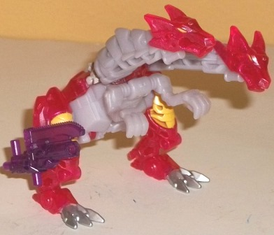
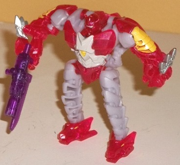
Size
: Legion
Difficulty of Transformation
: Very
Easy
Color Scheme
: Transparent cherry
red, light pale milky purplish gray, and some yellow, silver, yellow, and
transparent dark purple
Individual Rating
: 9.4
Like Blight, Hun-Gurrr
is barely changed from his mass-release version, with the obvious differences
being that the red plastic is now transparent and the weapon is a transparent
dark purple. As with Blight, the paint app placement and general colorations
are all unchanged. I will say that compared to Blight, the transparent
plastic is an improvement in this case, as the particularly "cherry" tint
to this red looks quite nice. The bone white plastic from the original
has been changed to a milkier, slightly purple-tinged version of the same
color (and this goes for the paint in that color as well). I also think
this is a positive change, as it gives just a titch more color to Hun-Gurrr
this time around and helps him fit in a bit more color-wise with 'bots
like Blight and the purple weapon coloration. The yellow and silver are
completely unchanged. So, like Blight, not much has been revised for this
version, but UNlike Blight, the changes are slightly positive overall.
No mold changes have
been made to this version of Hun-Gurrr.
 Rippersnapper
Rippersnapper
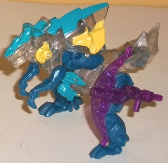
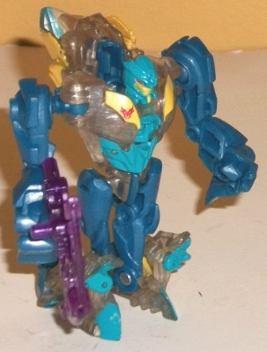
Size
: Legion
Difficulty of Transformation
: Easy
Color Scheme
: Glittery clear plastic,
moderately dark watery blue, and some yellow, moderately light watery blue,
transparent dark purple, and dull red
Individual Rating
: 7.7
Rippersnapper is where
the translucent redecoes become more obviously different from their predecessor's.
Just as with all the other Terrorcons in this set, Rippersnapper shares
the same GENERAL color outlay, his weapon is now transparent dark purple,
and his paint apps are in the same placement as they were on his original
version. However, the original's gray has been replaced with a clear plastic
with a bit of glitter in it, that looks a bit like murky water-- I quite
like it, as it calls back to Rippersnapper's watery origins in G1 as a
"landshark" and also looks substantially different. The blue plastic on
this version is a bit more purer of a blue, as opposed to the blue-green
on the original, and the blue paint on this one is of a lighter shade,
providing a bit more contrast between it and the rest of the colors. The
yellow paint apps are unchanged, though, as are the red eyes in robot mode.
All in all these colors really give off a better contrast and really help
give Rippersnapper a more "aqua-themed" appearance.
No mold changes have
been made to this version of Rippersnapper, though like all but the first
release of this mold, the clip that the robot head is on thankfully stays
on much better, so no head-popping-off issues here.
 Twinstrike
Twinstrike
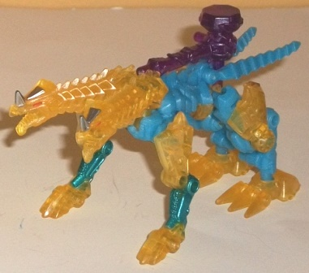
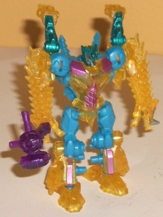
Size
: Legion
Difficulty of Transformation
: Easy
Color Scheme
: Transparent dull yellow,
light milky blue, and some transparent dark purple, silver, light red,
moderately light metallic violet, and metallic moderately dark greenish
blue
Individual Rating
: 8.9
This version of Twinstrike's
major changes are in his plastic colors; nearly all of his paint apps'
placements and coloration are exactly the same as on the initial release
of this mold. The sole change in this respect is that the metallic violet
used on a few places like Twinstrike's chest is just a couple of shades
lighter
than the metallic violet used on the initial release. Interestingly enough,
this is also the only change that I find to be negative; a darker violet
like on the original would've helped with visual contrast. For the most
part, the rest of the paint apps look good against their respective colors,
though keeping the paint on the front beast legs the same shade means they
don't fit in with the blue plastic this time around, which should have
been corrected. As for the plastic colors themselves, Twinstrike sticks
with most of his fellow translucent Terrorcons in that his main color is
translucent-- namely, a translucent, fairly dull shade of yellow-- while
his main plastic color is a bit lighter and slightly more pastel in its
nature (the dark greenish blue plastic on the original is now a light milky
blue on this version). Both of these changes I find positive; the transparent
shade of yellow really strikes the eye in a way the original's yellow didn't,
and the light sky blue provides a greater deal of contrast between it and
the other colors.
No mold changes have
been made to this version of Twinstrike.
 Windrazor
Windrazor
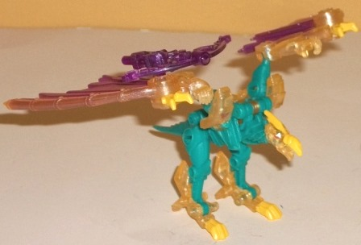
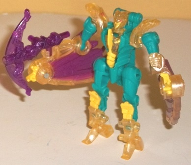
Size
: Legion
Difficulty of Transformation
: Very
Easy
Color Scheme
: Transparent light
pale yellow, dull seafoam green, moderately dark metallic violet, and some
yellow, light red, and transparent dark purple
Individual Rating
: 8.1
Okay, you know the drill
by now; Windrazor follows the same general color scheme and layout as his
mass release version, and shares the same placement and general coloration
of paint apps as well, and his bow weapon is now dark transparent purple.
The differences are in the shades, and for this guy, I think the differences
are pretty much all for the better. My favorite is the green, which is
now a slightly dark seafoam green and really catches the eye considerably
more than the original's forest green. The transparent plastic is a transparent
pale yellow-- more or less a transparent version of the shade on the original,
but with a bit more of an obviously yellowish tinge to it this time around.
It goes VERY well with the seafoam green, with both colors really standing
out against each other exceptionally well. The purple paint on the wings
is slightly lighter than on the original, but only by a shade-- it's still
essentially the same, and the purple goes well with the yellow just like
it did before. The yellow paint apps are the same shade and in the same
placement as on the original, but this time they're much more obvious as
they don't blend in with the background plastic as much, which is a definite
plus. The light red in the eyes also hasn't been changed for this release
either. Overall--- primarily because of the seafoam green, but also just
in the way the colors complement and contrast against each other-- I think
Windrazor here has the best color scheme in this set.
No mold changes have
been made to this version of Windrazor.
 Abominus
(Combined Form)
Abominus
(Combined Form)
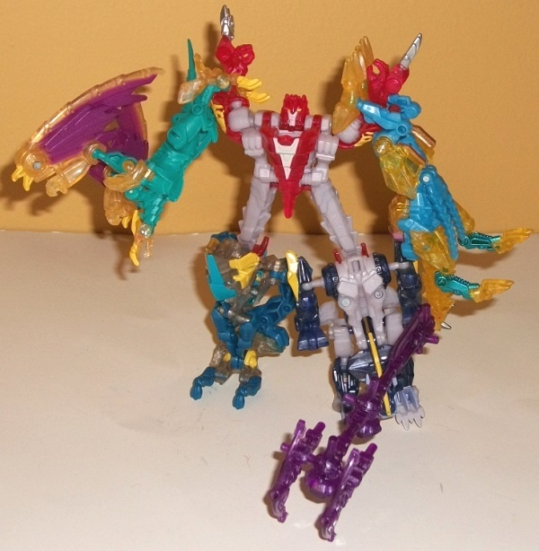
Difficulty of Transformation
: Medium
Individual Rating
: 2.5
Abominus is still... well, pretty much as awful as ever. As I said in his initial review, this is most definitely NOT what you should be buying these toys for. The translucent plastic-- while looking generally nice on each individual Terrorcon-- largely doesn't work on the combined mode. A big bruiser gestalt doesn't look right being partially transparent. The only exceptions to this are Hun-Gurrr and the Blight leg, as the translucent plastic on these figures either doesn't take up enough of the main body to look off (Hun-Gurrr) or is dark enough where it still looks solid in fairly dull lighting (Blight). On the plus side, having all the indivdual weapons be the same transparent dark purple does make the large combined weapon look nicer, sort of like an Energon hammer.
The translucent Terrorcons giftset I would recommend slightly over the individual releases of these molds, if for no other reasons than A. It's a couple of bucks cheaper than buying them separately, B. It's easier to get the whole set in one fell swoop this way, and C. This set actually comes with instructions for forming Abominus (even if I think the gestalt form is pure crud and not worth doing). Overall, I think the changed colors are a net positive across the set to boot, with Windrazor and Twinstrike being the biggest winners color-wise. If you have the originals this probably isn't recommended except for Prime Predacon completists given how similar the general color schemes are, but if you're lacking all/most of the originals, definitely go for this set instead.
Reviews by Beastbot